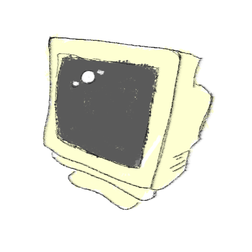
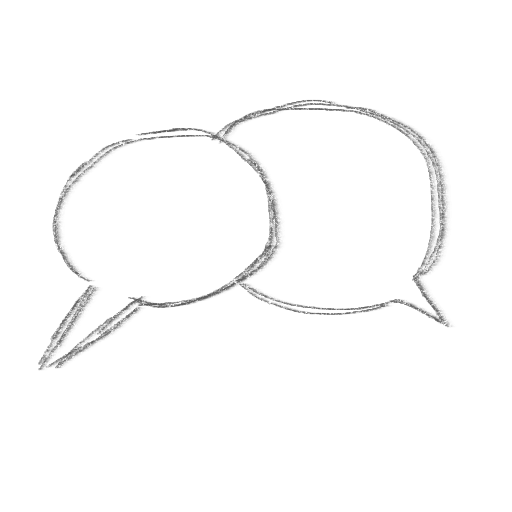
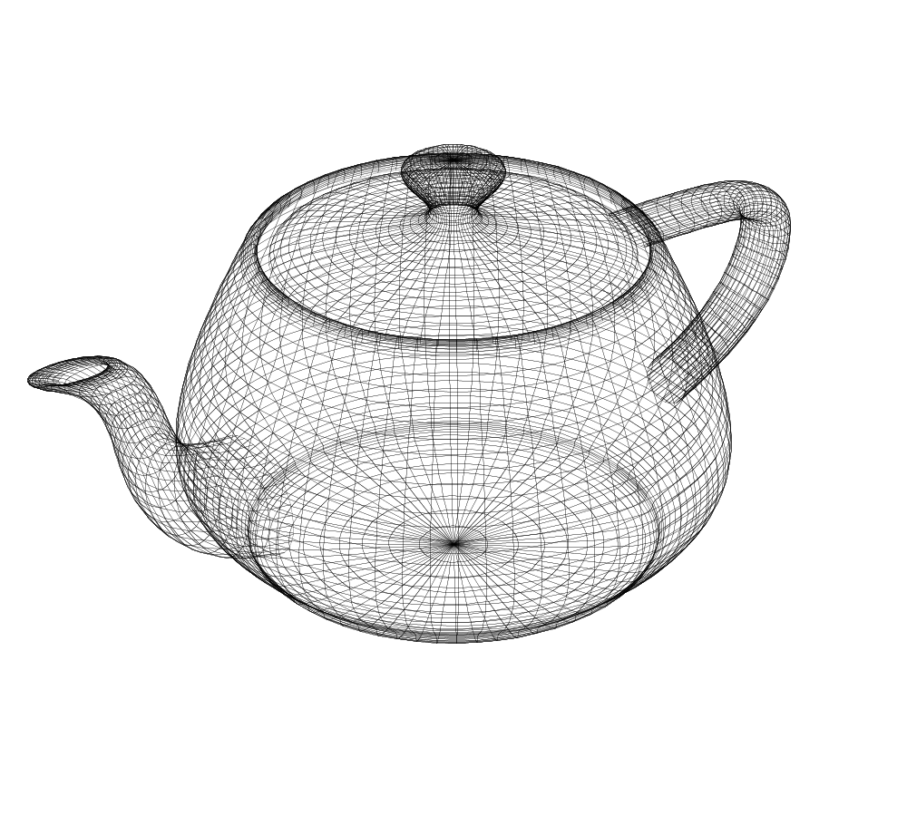

Me considero una persona ordenada y metódica. No es sorpresa entonces que me interesen las computadoras, una vez llamadas "Ordenadores". Antes de haberme inmerso en el mundo de la computación me interesaban por que las veía como una herramienta para explorar conocimientos y aprender nuevas cosas pero ahora se que también representan un esfuerzo colaborativo entre incontables individuos para transformar el mundo. Elegí la informática por que quiero contribuir con mi pequeño grano de arena a este proyecto y hacer mejor el mundo.


A pesar de mi fascinación con la tecnología no sigo el estereotipo al pie de la letra. Me gusta relacionarme con otras personas y trabajar en conjunto. Creo que entender a los demas y comunicar ideas es una de las partes mas importantes del trabajo.
Al final del dia el valor de cualquier tecnología existe en función del uso que le damos las personas.
Especialmente me cautiva el software que permite a las computadoras crear imágenes y arte digital.
La programación de gráficos combina múltiples disciplinas que me apasionan: matematica, analisis visual y creatividad.
Ahora mismo estoy aprendiendo a crear arte con código a través de shaders y utilizando el motor gráfico Godot.

Comunícate conmigo a través de mi correo
bautistarescala@gmail.com